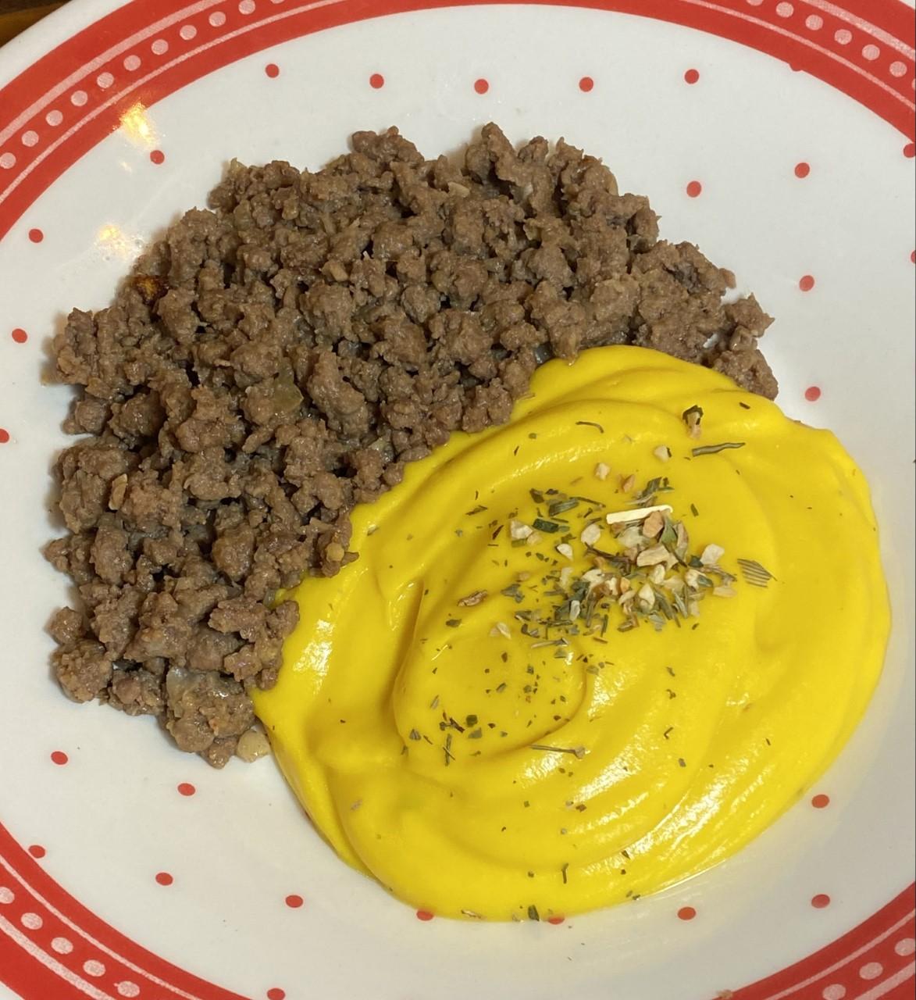

Creme de Abóbora com Carne Moída
Uma receita serve 2 pessoas

Foto do prato pronto (Foto by Luiza Laquini)
Ingredientes:
- 1/4 de uma abóbora madura
- 1/2 caixa de creme de leite
- 100ml de leite
- 1 bandeja de carne moída
- Tempeiros à gosto
Modo de Preparo:
- Descasque a abóbora e pique em pedaços (quanto menor, melhor).
- Cozinhe a abóbora apenas na água com sal.
- Após bem cozida, bata no liquidificador a abóbora junto com o leite e o creme de leite.
- Leve a mistura ao fogo para cozinhar.
- Tempere a carne moída ao seu gosto e frite-a.
- Sirva-os juntos e bom apetitie!